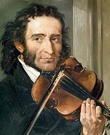

INTRODUCCION
Niccolò Paganini
(Génova, 1782 - Niza, 1840) Violinista, guitarrista y compositor italiano. Rodeado de una aureola mefistofélica por sus propios contemporáneos, asombrados ante su dominio del instrumento y su vida desordenada y aventurera, Niccolò Paganini fue el violinista por antonomasia del romanticismo.

Fue un niño prodigio, antes de cumplir los catorce años dominaba ya todos los secretos del violín, al extremo de que sus profesores reconocían no tener nada más que enseñarle. La gira que emprendió en 1828 por ciudades como Viena, Praga, Varsovia y Berlín lo consagró como el mejor violinista de su tiempo, capaz de extraer al instrumento músico sonidos y efectos inconcebibles, y le valió la fascinada admiración de personalidades como Franz Liszt.
Su estilo brillante y, en ocasiones, efectista, desarrolló de manera considerable las posibilidades técnicas del violín, explorando diversos recursos como las triples cuerdas, glissandi, pizzicati y arpegios, aprovechados en sus propias composiciones. Entre las obras de su autoría destacan los Veinticuatro caprichos para violín solo Op. 1 (1818), seis conciertos para violín y orquesta, nueve Cuartetos para guitarra y arcos (1806-1816) y piezas como La danza de las brujas (1813) y Tarantella (1830).